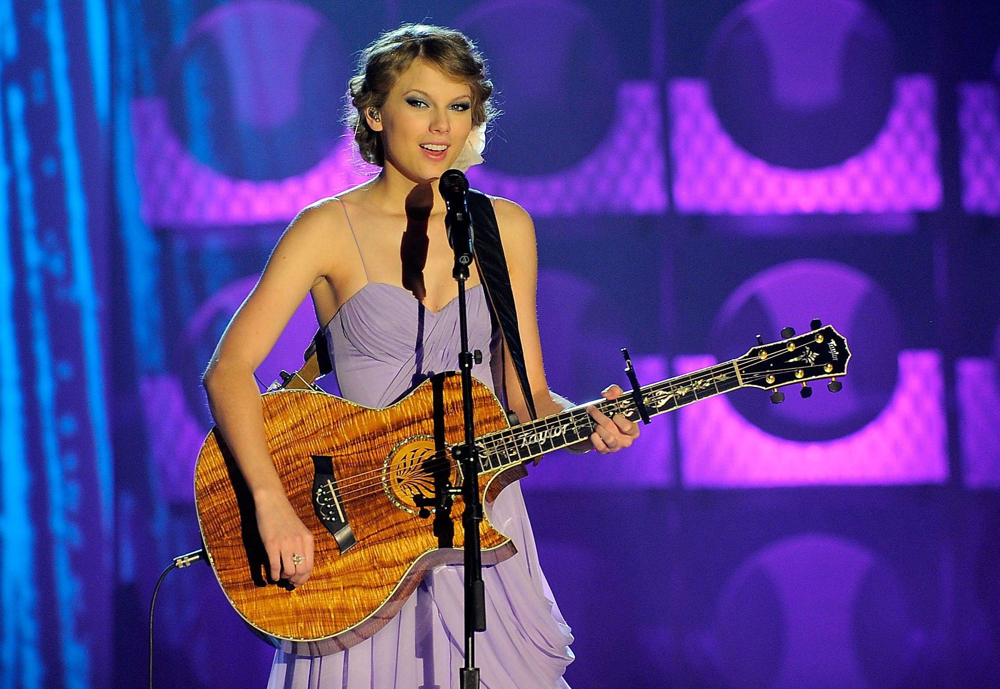
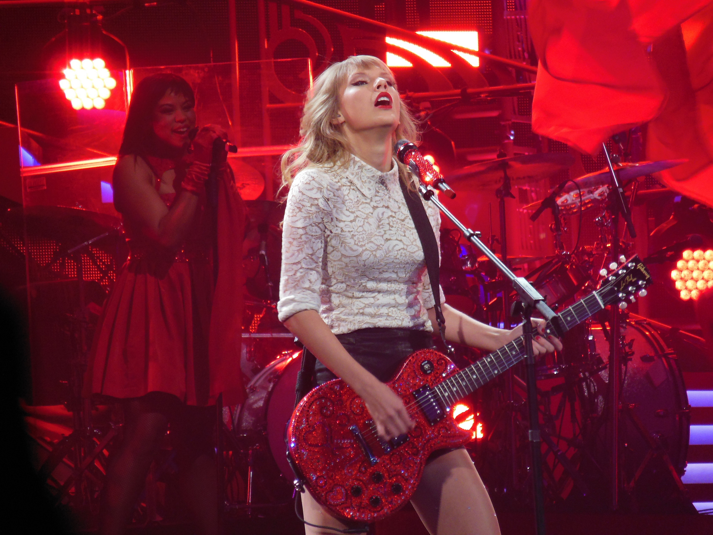
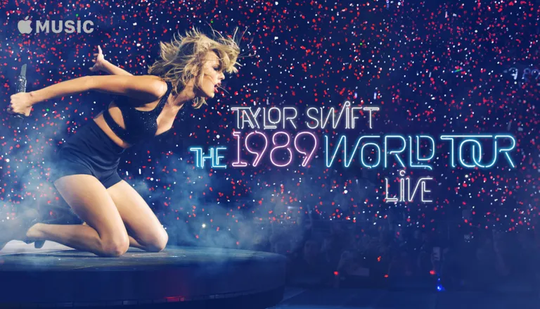
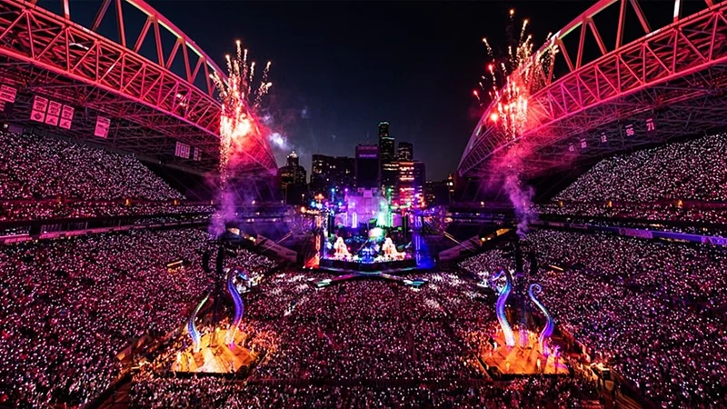
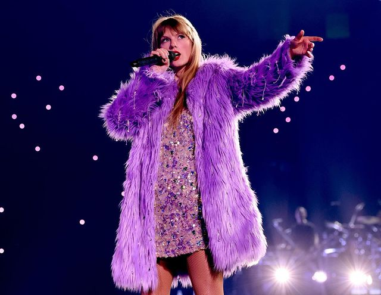

Taylor's Tours
Taylor Swift is known for her grand tours, which accompany the release of her albums and showcase her artistic evolution.br Since the beginning of her career, she has created immersive experiences for fans by combining music, visual storytelling, and high-level production.

Fearless Tour (2009–2010)
This was Taylor's first major international tour, promoting her Fearless album. The shows had a strong country-pop vibe, featuring fairytale-inspired outfits and storytelling elements like handwritten lyrics and diary-like visuals. It introduced her personal connection with the audience.
Placeholder
Speak Now World Tour (2011–2012)
A step up in production and theatricality, this tour showcased Taylor as a solo songwriter. Each performance was carefully staged, with dramatic visuals and costume changes. It highlighted her transition into more mature themes and global stardom.
Placeholder
The Red Tour (2013–2014)
Marking her shift toward pop, The Red Tour blended emotional ballads with bold, upbeat performances. The show featured energetic choreography, vibrant lighting, and surprise guest appearances from artists across genres, making each concert unique.
Placeholder
The 1989 World Tour (2015)
Fully embracing pop music, this tour reflected the polished, synth-driven style of the 1989 album. It featured futuristic visuals, runway-like stages, and a rotating cast of celebrity guests. It was a cultural phenomenon that solidified Taylor’s place as a pop icon.
Placeholder
Reputation Stadium Tour (2018)
Her biggest production yet, this stadium tour brought the darker, edgier aesthetic of the Reputation album to life. With giant snakes, cutting-edge visuals, and a mix of vulnerability and power, the tour broke numerous box office records.
Placeholder